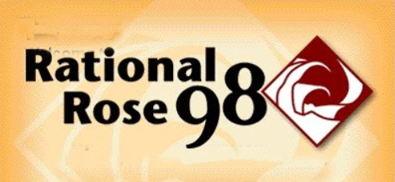
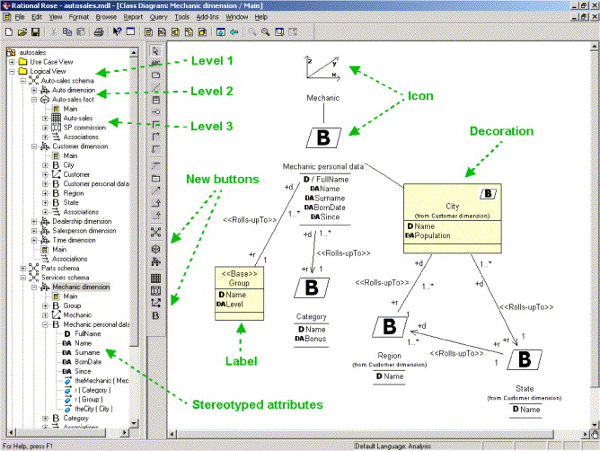
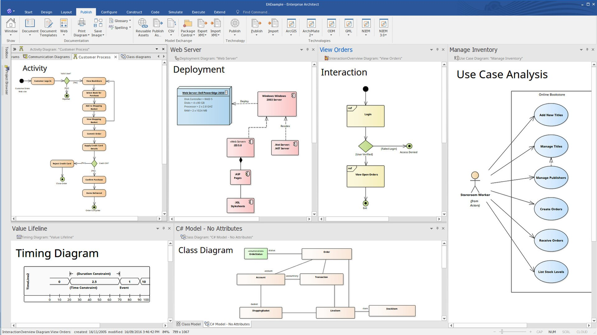

Mis on uppercase vahendid? (1)
Upper CASE (U-CASE) tööriistad:
Upper CASE tööriistad on peamiselt keskendunud tarkvaraarenduse elutsükli algfaasidele, sealhulgas nõuete
analüüsile, süsteemi modelleerimisele ja kõrgetasemelisele disainile. Need aitavad luua süsteeminõuete ja kujunduste
visuaalseid esitusi. U-CASE tööriistade ühised funktsioonid on järgmised:
Nõuete modelleerimine: tööriistad tarkvaranõuete hõivamiseks, korraldamiseks ja visualiseerimiseks, kasutades
selliseid tehnikaid nagu kasutusjuhtude diagrammid ja olemi-suhete diagrammid.
Diagrammi koostamine: tugi erinevate diagrammide, sealhulgas andmevoo diagrammide, olemi-seoste diagrammide ja
olekute ülemineku diagrammide koostamiseks.
Modelleerimiskeeled: U-CASE tööriistad toetavad sageli modelleerimiskeeli, nagu ühtne modelleerimiskeel (UML)
süsteemi modelleerimiseks ja kujundamiseks.
U-CASE tööriistade näideteks on IBM Rational Rose ja Sparx Systems Enterprise Architect.
Ise olen kasutanud
- Notepad++
- Microsoft PowerPoint
Näide üks: IBM Rational Rose (2) 
Rational Rose oli Unified Modeling Language arenduskeskkond. See integreerub Microsoft Visual Studio .NET ja
Rational Application Developeriga. Selle tarkvara kirjutas varem Rational Rose’i tootnud IBMi Rational Software
osakond.
Rational Rose'i tooteperekond on UML-i modelleerimistööriistade komplekt tarkvara kujundamiseks. Rational Rose
võiks kasutada ka allikapõhist pöördprojekteerimist ; selle võimaluse kombinatsiooni diagrammide põhjal allika
genereerimisega nimetati edasi-tagasi inseneriks . Siiski on selleks võimelised ka teised UML-i tööriistad,
sealhulgas Borland Together , ESS-Model , BlueJ ja Fujaba .

Näide kaks: Sparx Systems Enterprise Architect (3)
Sparx Systems Enterprise Architect on visuaalse modelleerimise ja disaini tööriist, mis põhineb OMG UML-il.
Platvorm toetab: tarkvarasüsteemide projekteerimist ja ehitamist; äriprotsesside modelleerimine; ja
tööstuspõhiste domeenide modelleerimine. Ettevõtted ja organisatsioonid kasutavad seda mitte ainult oma
süsteemide arhitektuuri modelleerimiseks, vaid ka nende mudelite rakendamise töötlemiseks kogu rakendusearenduse
elutsükli jooksul.

Kasutatud kirjandus
(1) https://dev.to/adityapratapbh1/comprehensive-overview-of-case-tools-streamlining-software-development-2p9p
(2) https://en.wikipedia.org/wiki/IBM_Rational_Rose
(3) https://en.wikipedia.org/wiki/Enterprise_Architect_(software)
Tagasi